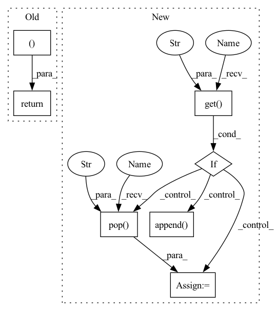

Pattern ID :37569
Before Change
self.__clear_masks__()
return None, edge_masks, related_preds
After Change
node_idx, self.__num_hops__, self_loop_edge_index, relabel_nodes=True,
num_nodes=None, flow=self.__flow__())
if kwargs.get("edge_masks" ) :
edge_masks = kwargs .pop("edge_masks" )
self.__set_masks__(x, self_loop_edge_index)
else:
// Assume the mask we will predict
labels = tuple(i for i in range(kwargs.get("num_classes")))
ex_labels = tuple(torch.tensor([label]).to(self.device) for label in labels)
// Calculate mask
edge_masks = []
for ex_label in ex_labels:
self.__clear_masks__()
self.__set_masks__(x, self_loop_edge_index)
edge_masks.append( self.gnn_explainer_alg(x, edge_index, ex_label))
hard_edge_masks = [self.control_sparsity(mask, sparsity=kwargs.get("sparsity")).sigmoid()
for mask in edge_masks]
In pattern: SUPERPATTERN
Frequency: 3
Non-data size: 7
Instances Fragment ID: 108115355
Project Name: divelab/dig
Commit Name: 1094bb655b4d8f08e5342ea7f78a1dd25ea6a423
Time: 2021-09-27
Author: 1161283769@qq.com
File Name: dig/xgraph/method/gnnexplainer.py
M Class Name: GNNExplainer
N Class Name: GNNExplainer
M Method Name: forward(4)
N Method Name: forward(4)
M Parent Class: ExplainerBase
N Parent Class: ExplainerBase
M File Name: dig/xgraph/method/gnnexplainer.py
N File Name: dig/xgraph/method/gnnexplainer.py
M Start Line: 137
M End Line: 155
N Start Line: 125
N End Line: 159
Before Change
return None, masks, related_preds
class GraphLayerGradCam(ca.LayerGradCam):
After Change
node_idx, self.__num_hops__, self_loop_edge_index, relabel_nodes=True,
num_nodes=None, flow=self.__flow__())
if kwargs.get("edge_masks" ) :
edge_masks = kwargs.pop("edge_masks" )
hard_edge_masks = [self.control_sparsity(mask, kwargs.get("sparsity")).sigmoid() for mask in edge_masks]
else:
// --- setting GradCAM ---
class model_node(nn.Module):
def __init__(self, cls):
super().__init__()
self.cls = cls
self.convs = cls.model.convs
def forward(self, *args, **kwargs):
return self.cls.model(*args, **kwargs)[node_idx]
if self.explain_graph:
model = self.model
else:
model = model_node(self)
self.explain_method = GraphLayerGradCam(model, model.convs[-1])
// --- setting end ---
edge_masks = []
hard_edge_masks = []
for ex_label in ex_labels:
attr_wo_relu = self.explain_method.attribute(x, ex_label, additional_forward_args=edge_index)
mask = normalize(attr_wo_relu.relu())
mask = mask.squeeze()
mask = (mask[self_loop_edge_index[0]] + mask[self_loop_edge_index[1]]) / 2
edge_masks.append(mask.detach())
mask = self.control_sparsity(mask, kwargs.get("sparsity"))
mask = mask.sigmoid()
hard_edge_masks.append( mask.detach())
// Store related predictions for further evaluation.
with torch.no_grad():
with self.connect_mask(self): Fragment ID: 108115357
Project Name: divelab/dig
Commit Name: 1094bb655b4d8f08e5342ea7f78a1dd25ea6a423
Time: 2021-09-27
Author: 1161283769@qq.com
File Name: dig/xgraph/method/gradcam.py
M Class Name: GradCAM
N Class Name: GradCAM
M Method Name: forward(3)
N Method Name: forward(3)
M Parent Class: WalkBase
N Parent Class: WalkBase
M File Name: dig/xgraph/method/gradcam.py
N File Name: dig/xgraph/method/gradcam.py
M Start Line: 94
M End Line: 118
N Start Line: 80
N End Line: 125
Before Change
related_preds = self.eval_related_pred(x, edge_index, masks, **kwargs)
return None, masks, related_preds After Change
labels = tuple(i for i in range(kwargs.get("num_classes")))
ex_labels = tuple(torch.tensor([label]).to(self.device) for label in labels)
if kwargs.get("edge_masks" ) :
edge_masks = kwargs.pop("edge_masks" )
hard_edge_masks = [self.control_sparsity(mask, kwargs.get("sparsity")).sigmoid() for mask in edge_masks]
else:
edge_masks = []
hard_edge_masks = []
for ex_label in ex_labels:
if self.explain_graph:
f = torch.unbind(out[:, ex_label])
else:
f = torch.unbind(out[[node_idx, node_idx + x.shape[0]], ex_label])
(m, ) = torch.autograd.grad(outputs=f, inputs=inp_with_ref, retain_graph=True)
inp, inp_ref = torch.chunk(inp_with_ref, 2)
attr_wo_relu = (torch.chunk(m, 2)[0] * (inp - inp_ref)).sum(1)
mask = attr_wo_relu.squeeze()
score_mask = (mask[self_loop_edge_index[0]] + mask[self_loop_edge_index[1]]) / 2
edge_masks.append( score_mask.detach())
mask = self.control_sparsity(score_mask, kwargs.get("sparsity"))
mask = mask.sigmoid()
hard_edge_masks.append(mask.detach())
Fragment ID: 108115356
Project Name: divelab/dig
Commit Name: 1094bb655b4d8f08e5342ea7f78a1dd25ea6a423
Time: 2021-09-27
Author: 1161283769@qq.com
File Name: dig/xgraph/method/deeplift.py
M Class Name: DeepLIFT
N Class Name: DeepLIFT
M Method Name: forward(3)
N Method Name: forward(3)
M Parent Class: WalkBase
N Parent Class: WalkBase
M File Name: dig/xgraph/method/deeplift.py
N File Name: dig/xgraph/method/deeplift.py
M Start Line: 80
M End Line: 105
N Start Line: 55
N End Line: 108